Context: Volvo Cars, European Union, Halmstad University, 2021–2022, card-based game (physical & digital).
My role: UX design, workshop facilitation, research, prototyping, user testing.
Team: Collaborative team with researchers, designers, and client stakeholders; co-creation and iterative workshops.
Users: Agile development teams; need to visualize and empathize with planetary impact of decisions.
Constraints: Limited pilot time, need for engaging format, complex sustainability data.
Outcome: Card-based training game, tested in workshops, digital prototype for ongoing learning.
Active8 Planet 2021–2022

Overview
Active8 Planet explored how design can put the planet at the center of mobility innovation. The project brought together industry, academia, and agile teams to address ecological sustainability in the mobility sector through research, workshops, and speculative design.


 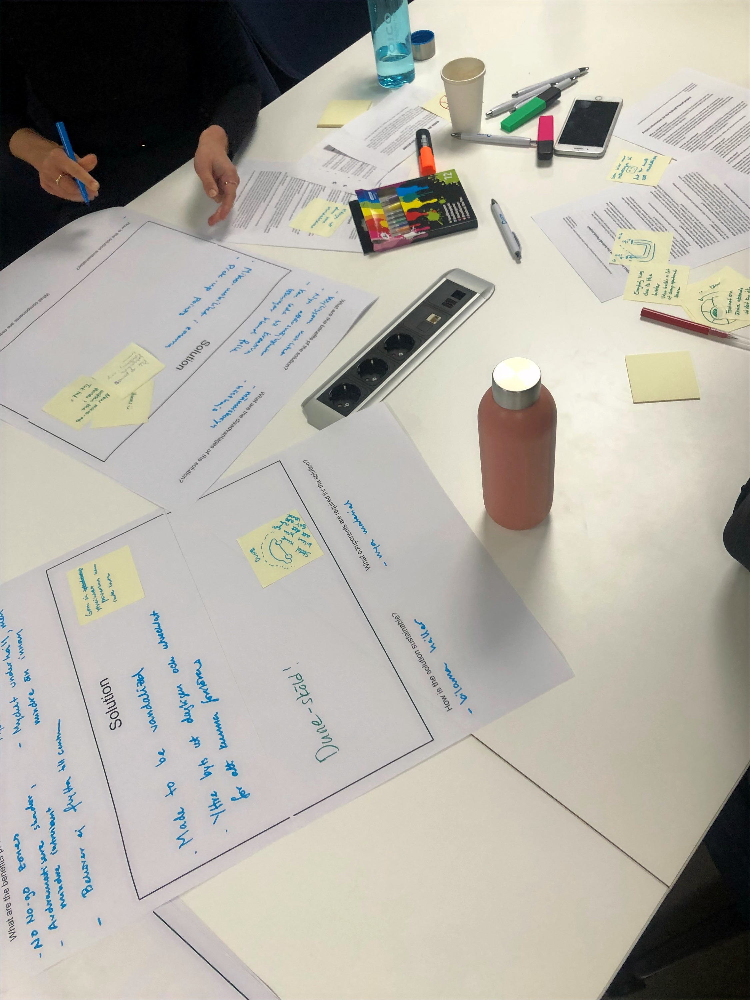
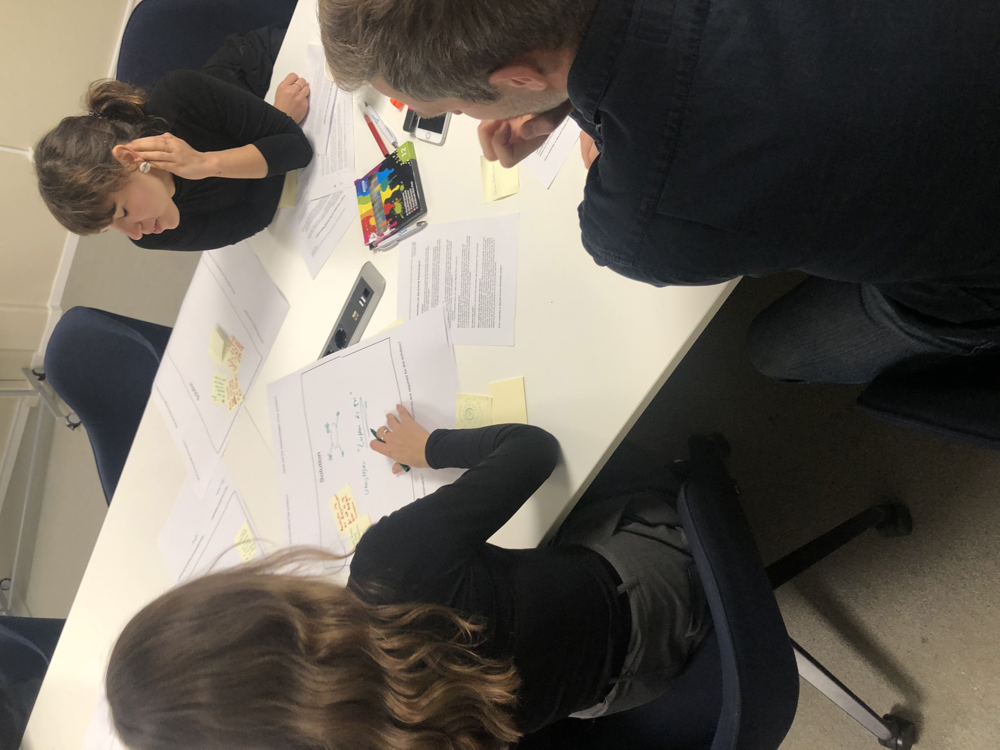
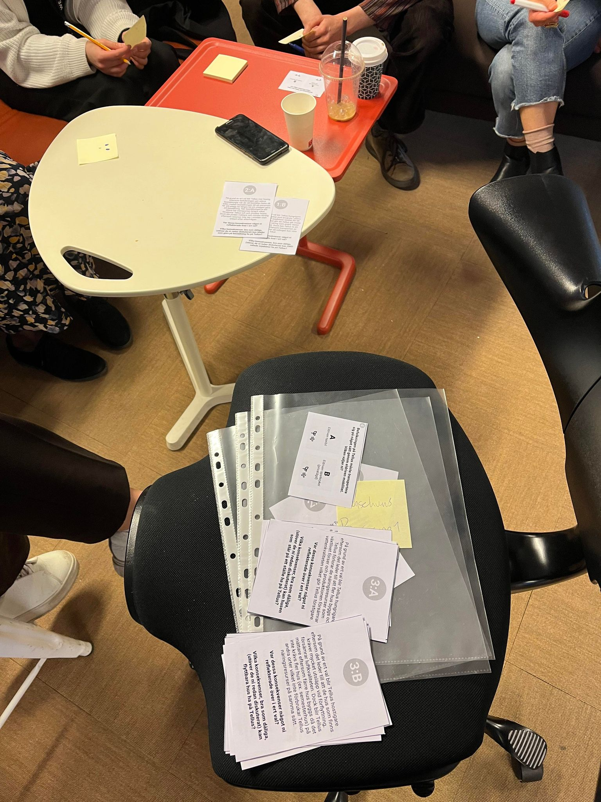
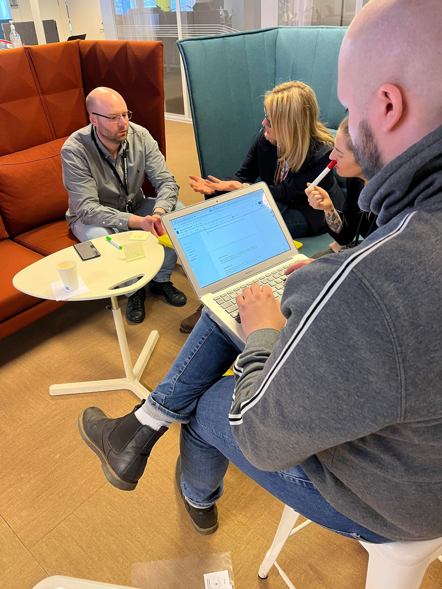
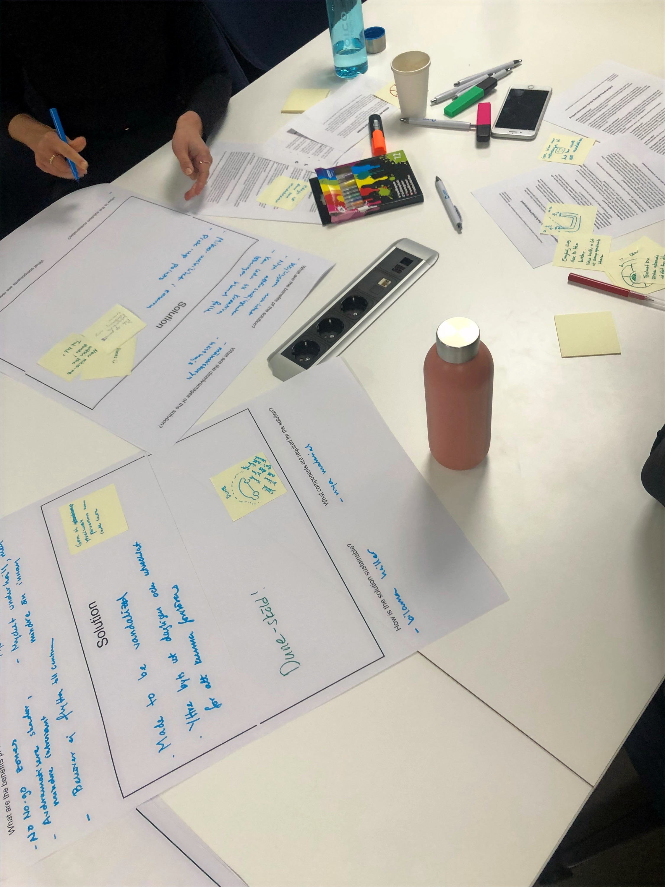
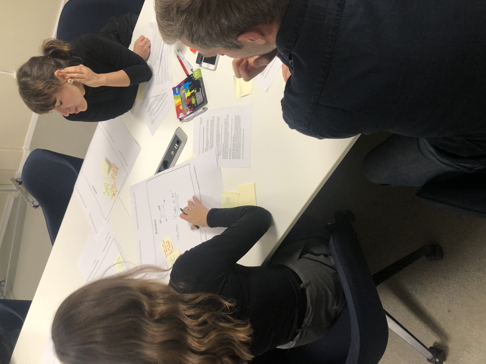
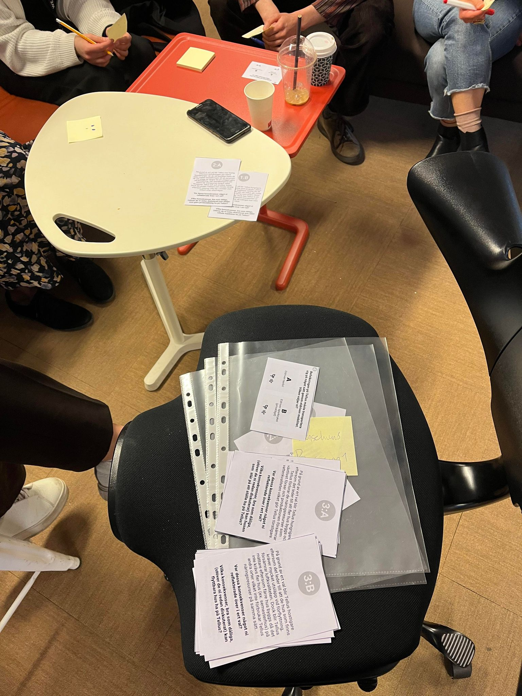
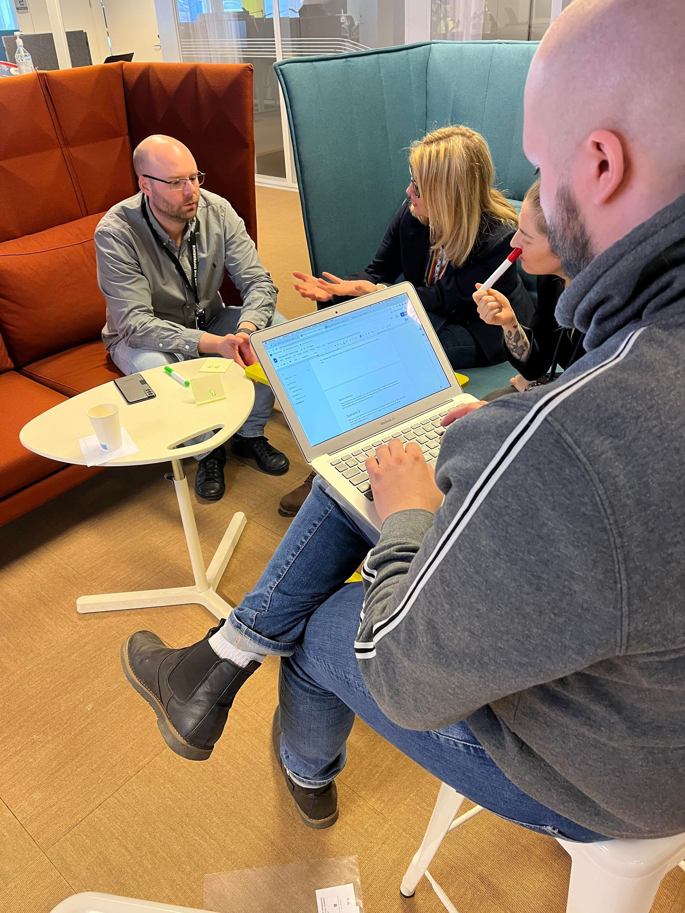
Process
My work was grounded in the Double Diamond model and informed by speculative and critical design thinking. I was involved in each stage of the process, from identifying sustainability challenges through interviews and literature, to translating those insights into tangible, engaging design artefacts. Throughout, I used creative methods to turn abstract data into grounded, thought-provoking outcomes.
 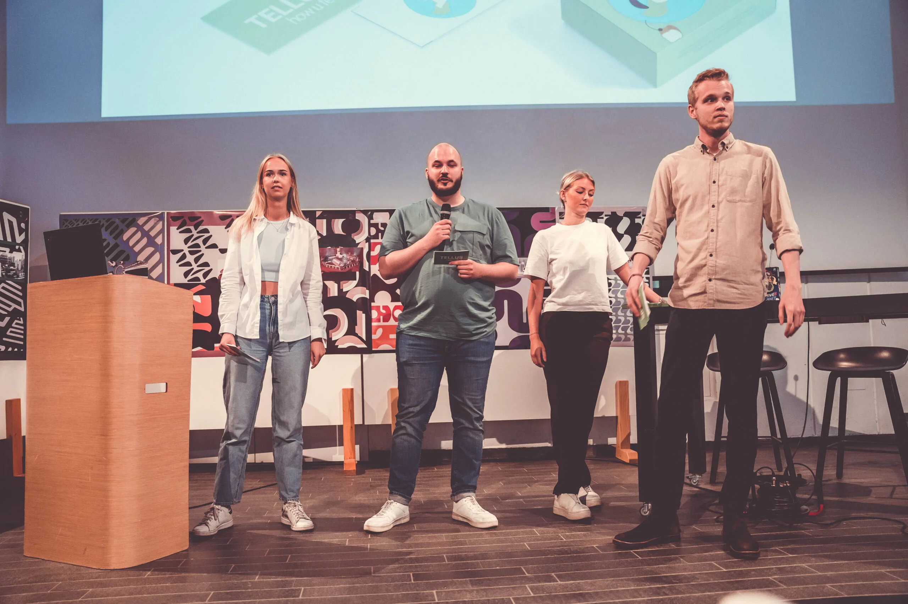
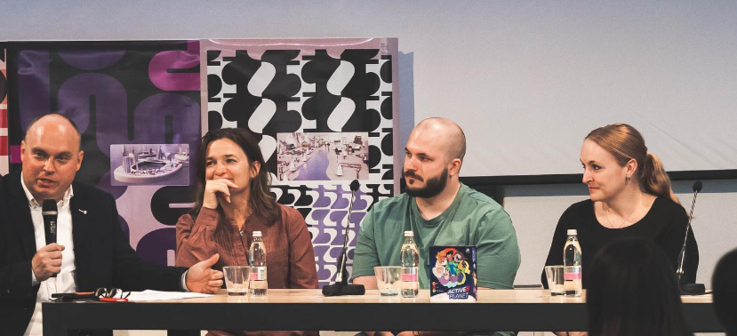
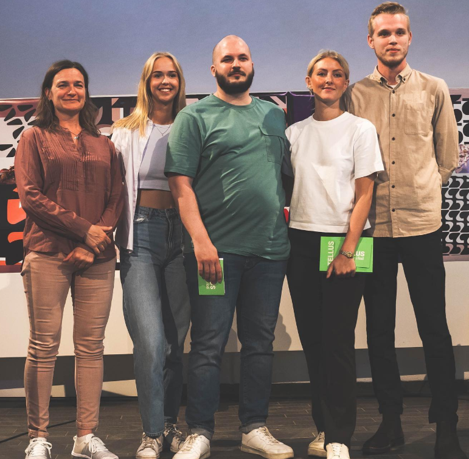
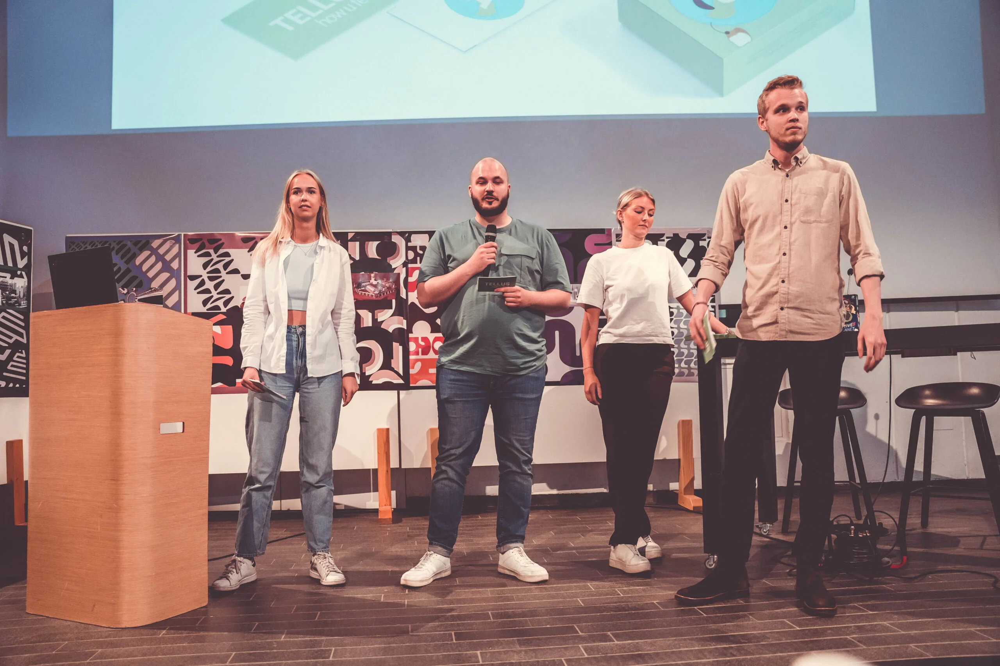
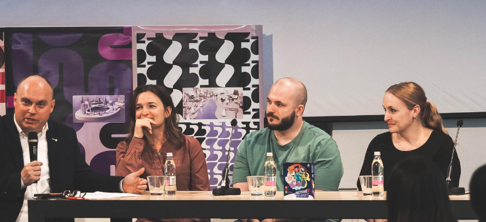
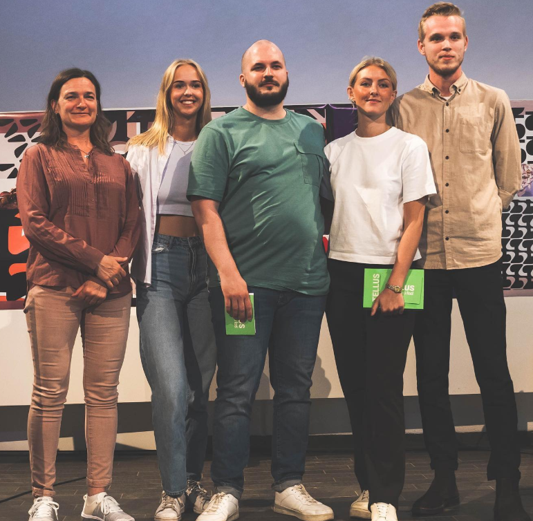
Outcome
To address the brief, I helped develop a speculative card-based training game aimed at agile teams in mobility organisations. The purpose of the game was to encourage empathy for the planet by visualising the consequences of everyday design and business decisions. I led the design and facilitation of pilot workshops where the concept was tested, iterated, and improved. I also digitised parts of the experience to make it more dynamic and realistic.
Reflection
One of the most impactful parts of the project was witnessing how participants, when prompted to imagine a world without cars, began to question core assumptions about mobility. These moments demonstrated how powerful design tools can be when they foster reflection and discussion. This project sharpened my ability to work with complex, value-driven topics in design and deepened my experience in leading participatory processes, using creative methods to translate abstract data into grounded, thought-provoking outcomes.